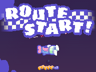
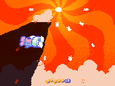
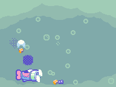
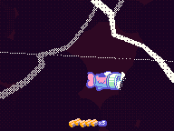
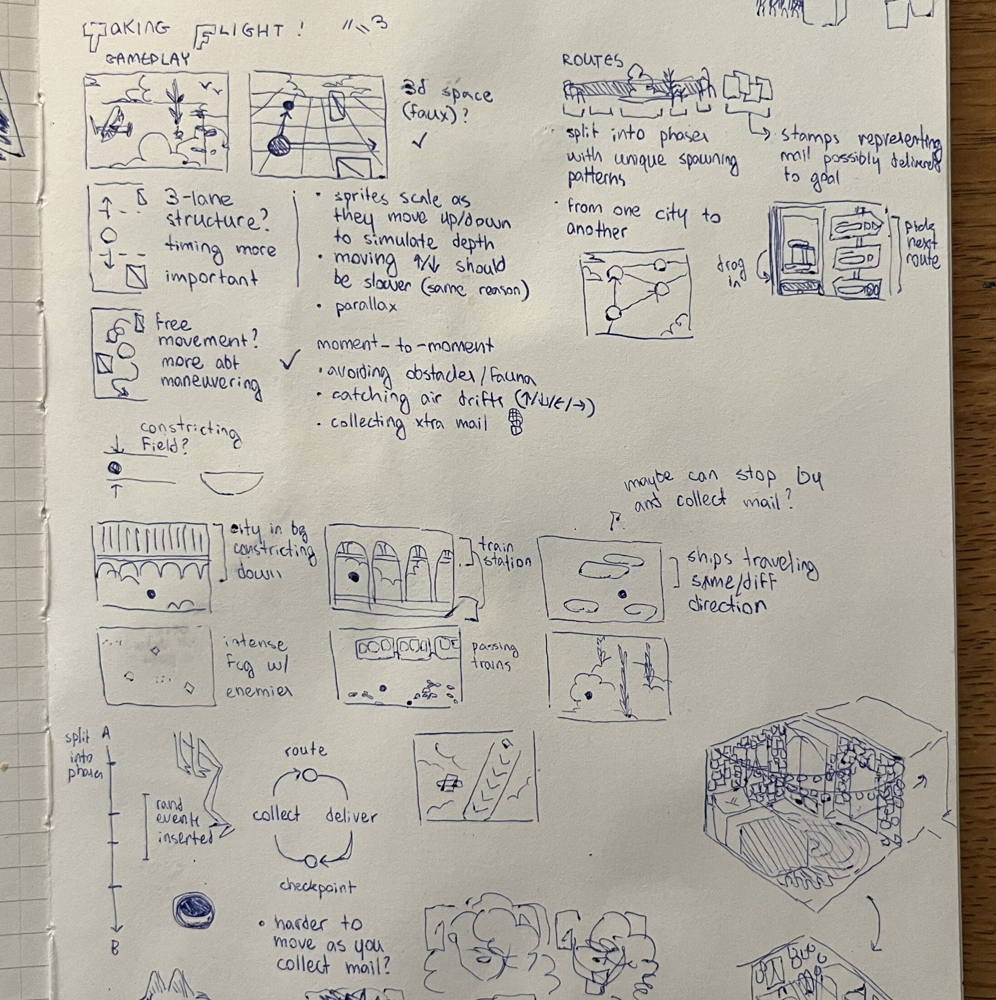
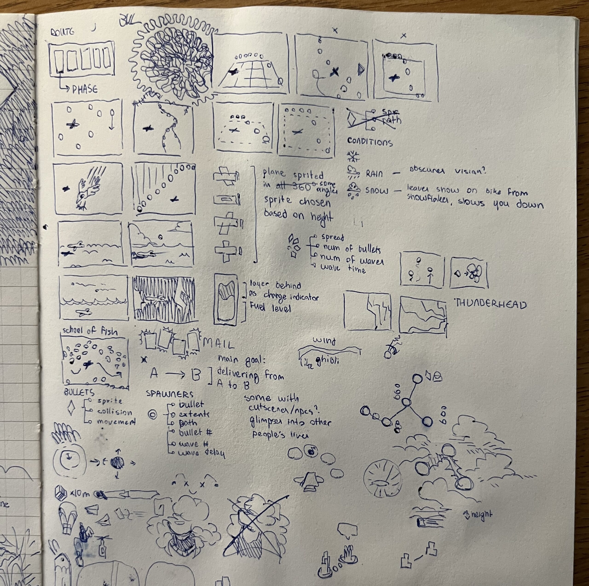
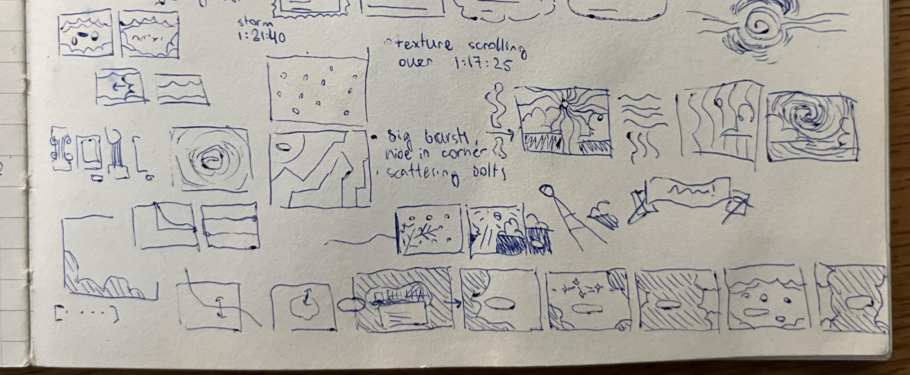

A bullet-hell mail delivery game set in the sky.




A demo of a bullet-hell game. Worked on June – July 2025, but left unfinished.
You can play the demo here:
I started working on the game in April 2025. I used PICO-8, a limitation-led game engine, to build a prototype. I showed it off to some friends at a games club meeting, but left it off to focus on finals.
I came back to it in June 2025 with the more robust Godot engine, intending to finish a demo that summer. Here are some of the original notes:


